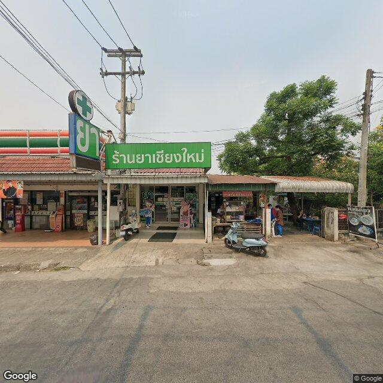
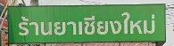
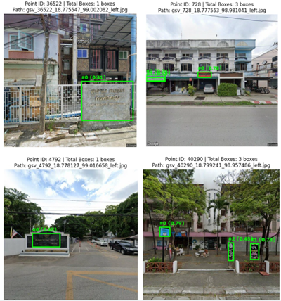
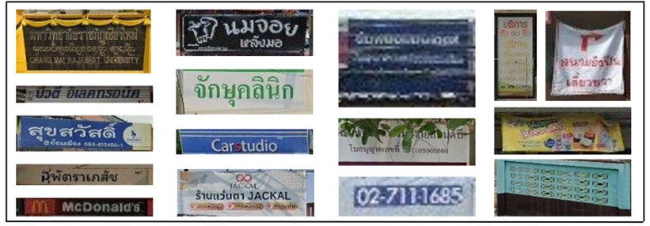

เมืองมีการเปลี่ยนแปลง
กิจการเกิดใหม่ เปลี่ยนแปลง หรือยุติกิจการ ทำให้ข้อมูล POI ต้องได้รับการปรับปรุงอย่างต่อเนื่อง
วิธีการเรียนรู้เชิงลึกสำหรับการปรับปรุงข้อมูลสถานที่สำคัญด้วยข้อมูลภาพ Street View
การเรียนรู้เชิงลึกสำหรับการตรวจจับป้ายจากภาพ Street View
เพื่อสกัดข้อมูล POI และเปรียบเทียบกับแหล่งข้อมูล Google Places และ OpenStreetMap

amenity=pharmacy01 / ที่มาและความสำคัญ
ข้อมูล POI ที่ทันสมัยสะท้อนพลวัตของเชียงใหม่ และสนับสนุนการวางแผนเมือง การเดินทาง และบริการดิจิทัล
ในฐานะศูนย์กลางเศรษฐกิจ การบริการ และการท่องเที่ยวของภาคเหนือ เชียงใหม่มีร้านค้า ร้านอาหาร ที่พัก และสถานบริการเกิดขึ้น เปลี่ยนแปลง หรือยุติกิจการอยู่เสมอ
การสำรวจภาคสนามและปักหมุดทีละจุดใช้แรงงาน งบประมาณ และเวลา ขณะที่ OpenStreetMap ได้ข้อมูลมากจากอาสาสมัคร ส่วน Google Places เป็นข้อมูลจากผู้ให้บริการเชิงพาณิชย์ ทั้งสองแหล่งจึงมีที่มาการเก็บข้อมูลสถานที่และการปรับปรุงต่างกัน
กิจการเกิดใหม่ เปลี่ยนแปลง หรือยุติกิจการ ทำให้ข้อมูล POI ต้องได้รับการปรับปรุงอย่างต่อเนื่อง
การสำรวจภาคสนามใช้ทั้งคน เวลาและงบประมาณ ส่วนข้อมูลจากแต่ละแหล่งมีรูปแบบและการเก็บและปรับปรุงต่างกัน
Street View เผยให้เห็นป้ายชื่อและรายละเอียดหน้าร้านที่ภาพถ่ายดาวเทียมมองไม่ชัด
POI (Point of Interest) หมายถึงจุดสนใจหรือสถานที่สำคัญ เช่น ร้านค้า ร้านอาหาร และสถานบริการ งานศึกษานี้ใช้ Deep Learning ตรวจจับป้ายจากภาพ Street View และอ่านหรือตีความข้อความเพื่อสกัดชื่อกับหมวดหมู่ จากนั้นเปรียบเทียบกับ Google Places และ OSM พร้อมพัฒนาเว็บแผนที่สำหรับแสดงผลและให้ผู้ใช้ตรวจสอบหลักฐาน เพื่อแสดงศักยภาพในการลดภาระการรวบรวม POI ด้วยมือและเป็นแนวทางสนับสนุนการปรับปรุงข้อมูลเชิงพื้นที่ในเขตเทศบาลนครเชียงใหม่
02 / ทำไมต้องภาพระดับถนน

ภาพ Street View แสดงป้ายชื่อกิจการและรายละเอียดหน้าร้าน ซึ่งช่วยเติมเต็มข้อมูลที่ภาพมุมสูงมองเห็นได้จำกัด
จากภาพ เราตรวจจับบริเวณป้าย อ่านข้อความ แล้วสกัดชื่อและประเภทสถานที่ เพื่อนำไปจัดเตรียมเป็น POI บนแผนที่
วันที่ภาพสะท้อนช่วงเวลาที่ถ่าย ไม่ใช่การยืนยันว่ากิจการยังเปิดอยู่ในปัจจุบัน03 / จากภาพถนน สู่ข้อมูลสถานที่
ภาพ Street View เป็นหลักฐานต้นทาง เก็บรหัสภาพ ทิศทางซ้ายขวาของภาพ และพิกัดจุดถ่ายภาพไว้เพื่อเชื่อมกลับมาตรวจสอบได้
ใช้โมเดล YOLO ที่ผู้วิจัยฝึกขึ้นเพื่อค้นหาบริเวณป้ายในภาพ และเลือกผลตรวจจับที่มีค่า confidence ตั้งแต่ 0.30 ขึ้นไป ค่า confidence เป็นระดับความเชื่อมั่นของโมเดลต่อผลตรวจจับ

ตัดภาพบริเวณป้ายที่ผ่านเกณฑ์ เพื่อนำไปอ่านข้อความ และเก็บภาพไว้เป็นหลักฐานประกอบ

EasyOCR อ่านภาษาไทยและอังกฤษ จำนวนนี้หมายถึงป้ายที่อ่านพบข้อความ ไม่ได้รับรองว่าข้อความถูกต้องทั้งหมด
LLM วิเคราะห์ข้อความรวมจากป้าย เพื่อสกัดชื่อและหมวดหมู่ ผลที่เห็นเป็นข้อเสนอจากโมเดล ยังต้องให้มนุษย์ตรวจสอบ
เลื่อนจากจุดถ่ายภาพ 10 เมตรตาม heading ของภาพ เป็นวิธีประมาณตำแหน่งเบื้องต้น ไม่ใช่พิกัดสำรวจจริงของร้าน
04 / สำรวจผลการศึกษา
แผนที่ช่วยนำเสนอผลลัพธ์ และเปรียบเทียบข้อมูล POI จาก Street View Google Places และ OpenStreetMap
ค้นหาสถานที่และเปิดดูหลักฐานภาพป้าย
02 / DENSITYสำรวจการกระจุกตัวของจุดที่ระบบตรวจพบ
03 / COMPAREพิจารณาข้อมูลจากสามแหล่งภายในขอบเขตเดียวกัน
04 / STATISTICSกราฟและตารางจำแนกตามหมวดหมู่
05 / EVIDENCEตรวจหลักฐานภาพพร้อมชื่อและประเภทสถานที่